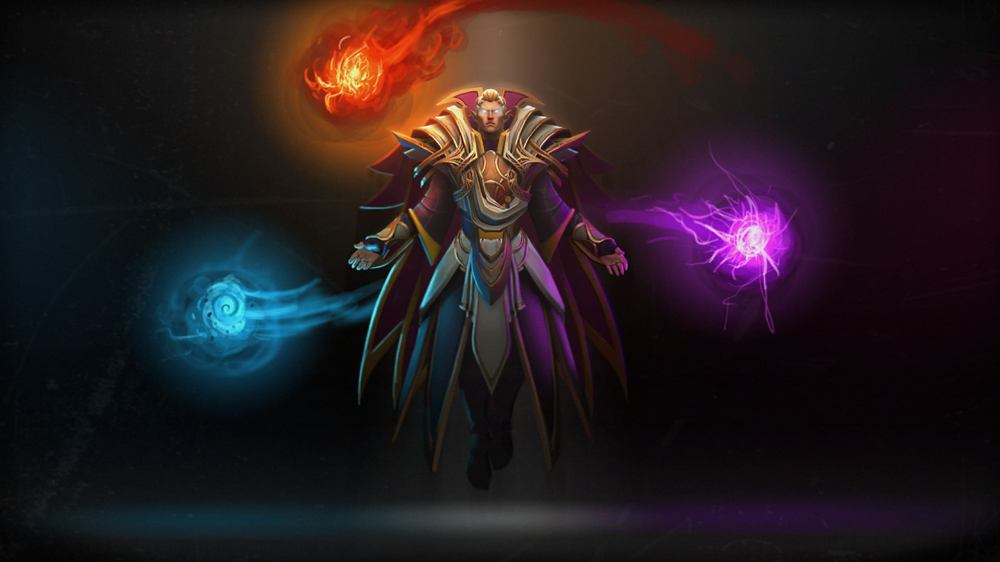

DOTA 2
Dota 2 is an Action RTS game, developed by Valve Corporation. The title was formally announced on October 13, 2010; and was released in 2013 through Steam, for Windows, OS X and Linux. It is the successor to the very popular Warcraft 3 mod, Defense of the Ancients, which was based on Aeon of Strife map for StarCraft. It will be released as a Free to Play game.
Dota 2 is a combination of RTS including perspective and a heavy requirement of tactics and team co-ordination and RPG including itemization and leveling up. The main objective in Dota 2 is to destroy the enemy Ancient Structure inside their stronghold, these strongholds are protected by multiple towers down 3 lanes. The player controls a Hero which fights for them and gains strength by leveling up by getting experience, which is given when creeps and heroes die, and by itemization by buying items with gold. Gold is gained passively over time, killing creeps, killing enemy heroes and buildings. You can prevent the enemy gaining as much gold and experience by denying creeps and buildings.